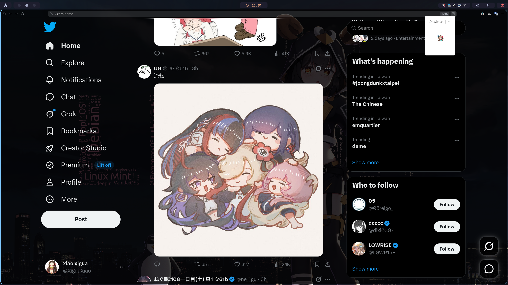

X Optimizer
還原經典小藍鳥 · 自訂分享連結預覽圖
By xiaoxigua-1 · 回首頁

功能特色
還原經典小藍鳥
一鍵將 X 的新 Logo 換回經典的小藍鳥圖示，找回熟悉的 Twitter 味道。
自訂分享連結
支援 fxtwitter 與 vxtwitter，快速修復 Discord、Slack 等平台的 OG 預覽圖。
即時生效
安裝後無需複雜設定，開啟 X 網站即可自動套用，一鍵切換開關。
安裝方式
關於 X Optimizer
X Optimizer 是一款輕量級的瀏覽器插件，專為 X（原 Twitter）用戶設計。它可以還原經典的小藍鳥 Logo，讓你的 X 介面更具個人風格。同時內建 fxtwitter 與 vxtwitter 支援，讓你在分享連結時能獲得更好的 OG 預覽效果。